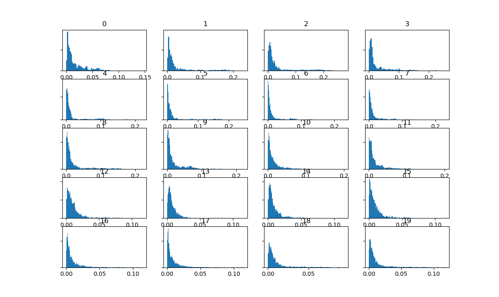

Homepage Extracting Meaning From Audio
Here are histographs of three tracks from Free Music Archive. The histograms show the values for MFCC, chroma and spectrogram features respectively.
As the MFCC has 20 features and the chromagram has 12, a histogram is shown for each of these features. The spectrogram has 1024 features and therefore only the first 20 features are shown. The MFCC and spectrogram are complex,
although differences in their values suggests audio differences in the songs. The chromagram displays the energy in each note - more data towards the higher end of the histograms suggests that a song is more energentic. It appears that the rock song contains higher energy
levels on average as shown by the data present at higher energy levels on various notes, while the other two tracks have much more noticeable
peaks in energy at lower levels which drastically dips off at higher energy levels. This correlates with the sound of the rock song, which is loud and high-energy.
The histograms overall show that the hip-hop track contains the lowest energy levels of the three tracks, which becomes apparent when listening to the track
as it sounds much more mellow
than the other two tracks. Its energy level spikes at the lower end of the histogram, although the B note (histogram 11) does show more
energy overall, perhaps indicating high prevalence of this note throughout the track. The histogram for the electronic track also shows dips in data after
the low-level energy, however it does maintain some data over higher energy levels. The A note in particular appears to contain somewhat similar amounts of data over the various levels of energy.
To view the source CSVs, images of the annotation layers and a full writeup for this task, please view "Project Files" in my GitHub repository!.
Scott Holmes - Our Big Adventure - Rock
| MFCC | Chromagram | Spectrogram |
|
|
|
 |
Yung Kartz - Drip - Hip Hop
| MFCC | Chromagram | Spectrogram |
|
|
 |
 |
The 303 - Untitled Bonnet 2 - Electronic
| MFCC | Chromagram | Spectrogram |
 |
 |
 |
Annotation Layer Images
Our Big Adventure


Drip


Untitled Bonnet Two